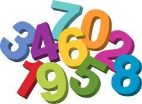

In what concerns the continuous evaluation solving exercises grade during the semester, you should submit until 23:59 of October 18th
(this exercise will still be available for submission after that deadline, but without couting towards your grade)
[to understand the context of this problem, you should read the class #02 exercise sheet]

Pedro and Ana are playing a new game. One of them writes a sequence of integer numbers and the other needs to find what is the contiguous subsequence (one or more consecutive numbers) which gives origin to the largest possible sum.Imagine for instance that Ana chooses the following sequence of numbers:
-1 4 -2 5 -5 2 -20 6
A few examples of possible contiguous subsequences are the following:
|-1 4 -2 5 -5 2 -20 6| (sum = -11) -1 4 -2 5 -5 |2 -20 6| (sum = -12) |-1 4 -2 5 -5 2|-20 6 (sum = 3) -1 4 -2 |5|-5 2 -20 6 (sum = 5) -1 |4 -2 5|-5 2 -20 6 (sum = 7)
The last of these sequences corresponds to the best contiguous subsequence that Pedro could choose, that is, the one with the largest sum.
Can you help the two friends play this game?
Given a sequence of N integer numbers, your task is to compute the largest possible sum of a contiguous subsequence of one or more numbers.
The first line of input contains N, the quantity of numbers on the sequence.
The second line contains exactly N integer numbers Si, representing the sequence itself, separated by single spaces.
A single containing the largest possible sum of a contiguous subsequence, as described before.
The following limits are guaranteed in all the test cases that will be given to your program:
| 1 ≤ N ≤ 200 000 | Quantity of numbers | |
| -2 000 ≤ Si ≤ 2 000 | Range of each number |
| Example Input 1 | Example Output 1 |
8 -1 4 -2 5 -5 2 -20 6 |
7 |
| Example Input 2 | Example Output 2 |
3 -2 -1 -3 |
-1 |
| Example Input 3 | Example Output 3 |
5 2 4 6 8 10 |
30 |